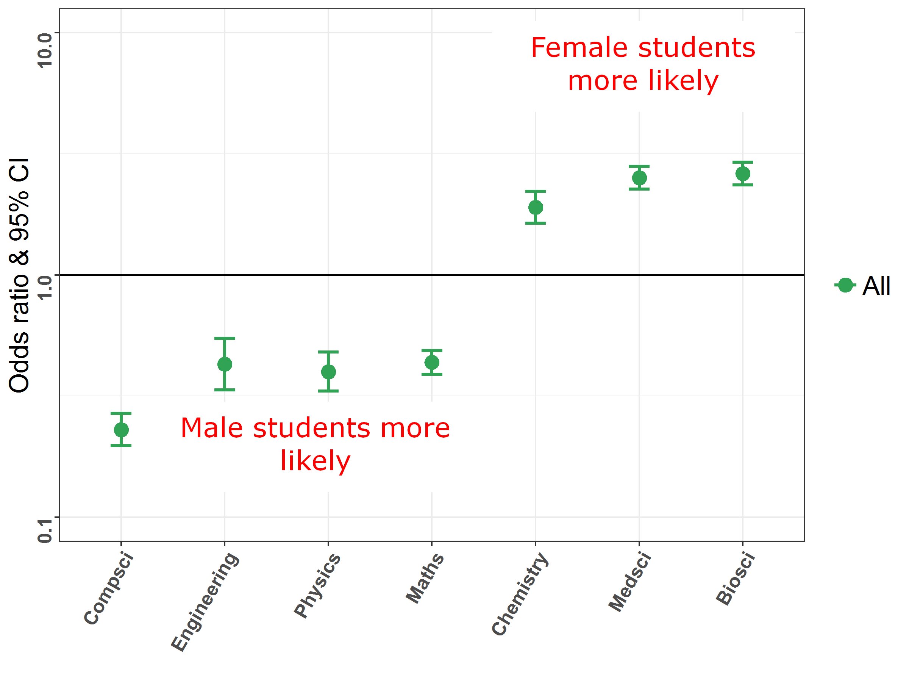

Transverse Movements

Female students more likely to take life science/chemistry after first year physics
Male students more likely to study physics, maths, engineering
Original study intention is important. Physics for Life Sciences (Medicine/Bioscience majors) versus Advancing Physics (Physics majors)